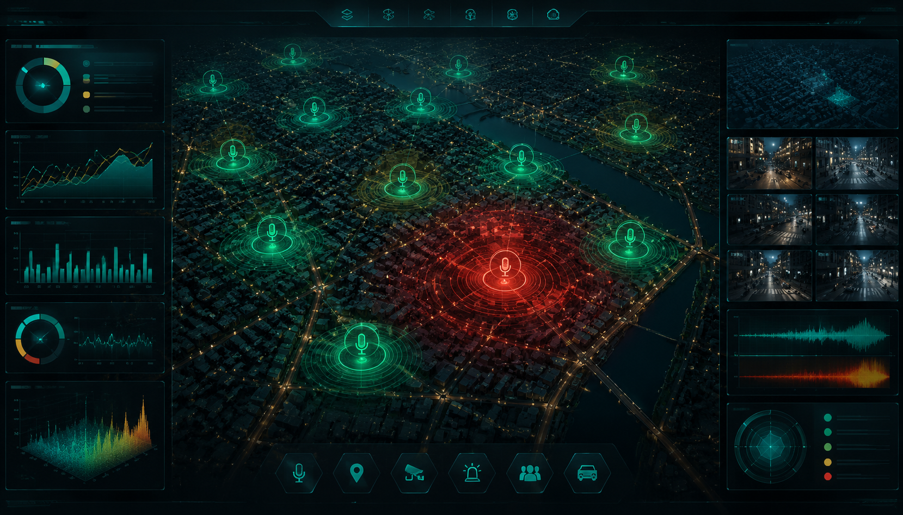
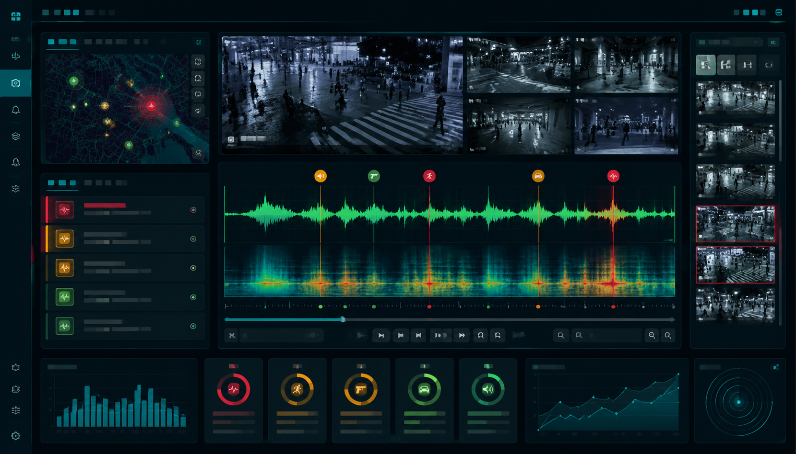

星河商业街出现尖叫呼救
系统从实时音频流中识别“尖叫呼救”，输出置信度、持续时长、事件边界和点位编号。
城市级声学事件感知平台
城市·谛听把公共拾音器、摄像头、半监督 SED 模型和 GIS 平台串联起来，形成"听到异常 → 地图预警 → 调取视频 → 形成摘要 → 统计复盘"的闭环。

事件处置链路
系统从实时音频流中识别“尖叫呼救”，输出置信度、持续时长、事件边界和点位编号。
地图按五色等级显示风险范围，同时展示周边拾音器、摄像头和区域趋势。
用声音事件边界截取事前 8 秒、事件中、事后 12 秒视频片段，降低人工回看成本。
事件进入日志、队列和历史统计，用于日/周报、区域高发分析和人力调度。
为什么不是普通监控大屏
城市声学感知不是替代视频监控，而是补足视频"看不见、看不清、看不懂"的短板，让异常事件更早进入处置链路。
平台界面展示
每类界面对应一个处置动作：定位风险、查看队列、联动回放、统计复盘。
主视图按红、橙、黄、蓝、绿显示全城风险态势，点击事件点可查看点位、置信度、持续时长和周边设备。
右侧按时间滚动写入事件队列，突出最高风险事件，管理者不用盯整张地图找异常。
以声音事件边界为锚点，同步展示监控画面、音频波形、声谱片段和自动摘要，减少人工回看成本。
按区域、时间段、事件类型聚合，帮助管理者看出高发点和高发时段，调整巡防与设备布点。
核心算法能力
来自拾音器阵列和监控设备的秒级音频片段，带时间戳与点位编号。
利用无标签数据生成伪标签，降低人工标注成本，适配真实城市噪声。
输出爆炸、碰撞、呼救、人群聚集等事件及起止时间。
检测结果进入事件库，触发五色预警、视频截取和处置记录。
测试与可信度
真实场景下对敏感声音事件的平均识别效果。
降低爆炸、碰撞、呼救等高风险事件漏报概率。
样例后端统计的检测、入库、地图更新平均时延。
人群聚集、车辆碰撞、尖叫呼救、鸣笛、玻璃破碎。
可点击演示
工作台保留事件筛选、地图点位点击、事件详情、队列和模拟检测，用于完整演示异常事件处置流程。
置信度 0.912，持续 11.2s。已关联 CAM-08B 视频通道并生成处置摘要。

| 事件编号 | E-240617-03 |
|---|---|
| 发生地点 | 星河商业街 |
| 发生时间 | 2024-06-17 19:48:07 |
| 置信度 | 0.912 |
| 持续时长 | 11.2s |
| 联动动作 | 地图弹窗、视频截取、日志入库、处置队列 |
没有匹配的事件